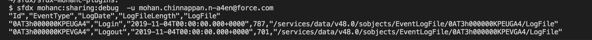
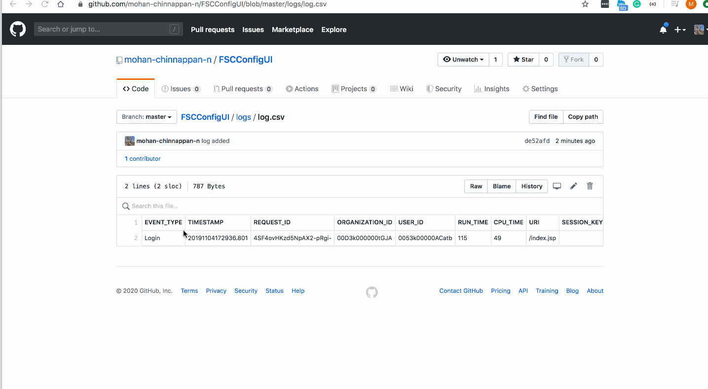

Salesforce Event Monitoring helps to keep your data safe
- Helps you see the granular details of user activities(events) in your organization.
- You can view information about individual events or track trends in events to swiftly identify abnormal behavior and safeguard your company’s data.
- Event monitoring is an API-only feature and you will not be see in Setup area
- Logins
- Logouts
- URI (web clicks in Salesforce Classic)
- Lightning (web clicks, performance, and errors in Lightning Experience and the Salesforce mobile app)
- Visualforce page loads
- API calls
- Apex executions
- Report exports
All these events are stored in event log files.
Complete details of the EventLogFile object is here
Getting the log file names
Getting the log file content
curl -X GET https://mohansun-fsc-21.my.salesforce.com/services/data/v48.0/sobjects/EventLogFile/0AT3h000000KPEUGA4/LogFile -H 'Authorization: Bearer 00....N.' -H "X-PrettyPrint:1" EVENT_TYPE","TIMESTAMP","REQUEST_ID","ORGANIZATION_ID","USER_ID","RUN_TIME","CPU_TIME","URI","SESSION_KEY","LOGIN_KEY","REQUEST_STATUS","DB_TOTAL_TIME","BROWSER_TYPE","API_TYPE","API_VERSION","USER_NAME","TLS_PROTOCOL","CIPHER_SUITE","TIMESTAMP_DERIVED","USER_ID_DERIVED","CLIENT_IP","URI_ID_DERIVED","LOGIN_STATUS","SOURCE_IP" "Login","20191104172936.801","4SF4ovHKzd5NpAX2-pRgi-","00D3k000000tGJA","0053k00000ACatb","115","49","/index.jsp","","VIpEvxzS06n/RniU","","59750786","Mozilla/5.0 (Macintosh; Intel Mac OS X 10_13_6) AppleWebKit/537.36 (KHTML, like Gecko) Chrome/78.0.3904.70 Safari/537.36","","9998.0","fsc_trialforce@fsc.org","TLSv1.2","ECDHE-RSA-AES256-GCM-SHA384","2019-11-04T17:29:36.801Z","0053k00000ACatbAAD","Salesforce.com IP","","LOGIN_NO_ERROR","Salesforce.com IP"
Sample Log file content

Event Monitoring Analytics App - This Analytics app is a way to get insights into your event monitoring data without ever leaving the Salesforce platform. Your data is automatically loaded from Salesforce to the app so you always get the most recent (and most stunning) visualization of what’s going on in your org. The app provides a collection of dashboards that use pre-integrated event data, so it’s a great way to get started with event monitoring.

- Monitor data loss
- Capture unusual user behaviors
- Increase adoption
- Find out parts of your organization that aren’t performing well
- Tell how users are using a new feature introduced last week
- Determine the cause of slow page performance and find issues like network delays
- Optimize performance